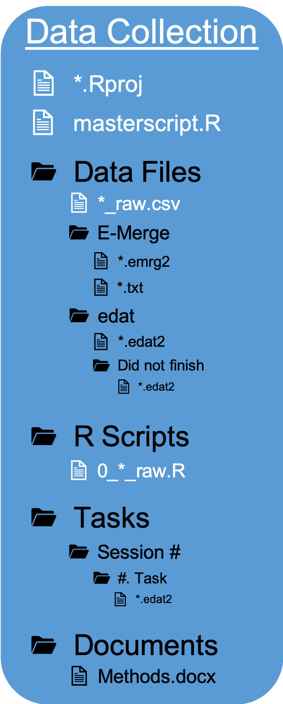
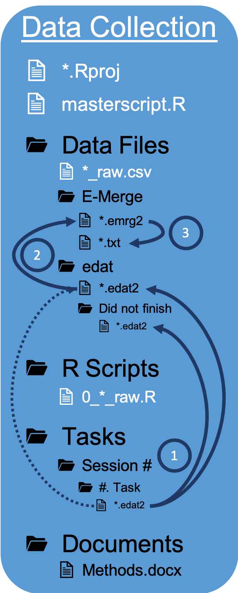
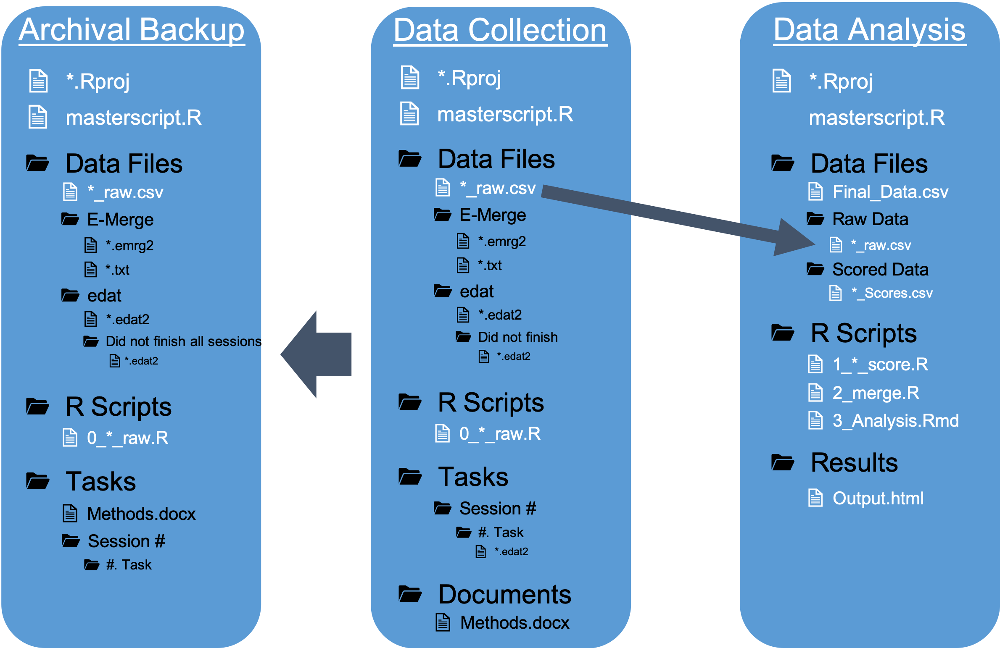

Chapter 14 Organization
In the EngleLab, in a typical study we will have multiple projects each with their own research questions. Keeping track of which data files, R scripts, and tasks are common across projects and which are unique can get overwhelming and undermine our ability to analyze our data.
I will suggest a particular organizational method to deal with this issue. This method will also make it easier in the future to go back and work with unanalyzed or archival data.
The basic idea is that you have a central repository for a study. That central repository will store:
Raw data files
R Scripts
- To convert messy raw data files to tidy raw data files
- To convert messy raw data files to tidy raw data files
The programmed tasks administered to subjects
Any documents related to the study
- Methods document, Consent form, demographic forms, etc.
From this central repository you can then create separate repositories for different data analysis projects. To do so, you only need to copy and paste the raw data files.

An advantage to this is that for each data analysis project, you will be able to FULLY reproduce your data processing and analyses independently of other data analysis projects.
A more typical scenario that you might be in the habit of is such that you do not start each data analysis project from the raw data files. Instead you might go into a separate data analysis project and copy and paste the Final data file that is ready for analysis for that project. A problem with this is that these different data analysis projects are often times ongoing, happening relatively during the same time, and by different people! Who knows if you are actually borrowing their FINAL data file. Who knows what decisions that other person made about how to score or clean the data. What if you decide you want to score or clean the data differently?
Well you can get around all these problems if you have the original raw data files. You can even copy and paste some of the R Scripts from the other data anlayis projects to save you time. But the crucial thing is that now you can see what decisions they made to score and clean the data and if you want to you can change them for your project. Or keep them the same. This also allows you to more effectively share your data analysis project to other researchers or to your future self.
This method makes implementing Open Science practices easier
14.1 Data Collection
You start out with a single repository: Data Collection. It may be organized something like this

During the data collection stage the most important directories are
Tasks
Documents
Tasks is where the E-Prime task files are that will be used to administer each task to the subjects. In our lab we typically have multiple Sessions and multiple #. Tasks in each session. As you begin data collection, .edat2 data files will start to accumulate in each #. Task folder.
Documents is where you may store various documents related to the study, such as a Methods.docx document describing each task in detail. This is an important document for archival purposes. Some of your other documents in this directory may not be as important for archival purposes, such as an informed consent form.
At some point you will need to start processing and analyzing the data. This is where the other two directories come into play
Data Files
R Scripts
Data Files is where you will end up storing ALL the data files. This means you will have to move the .edat2 files from Tasks to Data Files. It is up to you whether you want to copy and paste or just move the files (deleting the files from Tasks).
There are two scenarios in which you may need to start processing and analyzing data:
Before data collection has finished
After data collection has finished
After data collection, you will want to separate files for those subjects that completed all sessions of the study and those that did not. We do not analyze the data for those subjects that did not complete all sessions.
Then you will need to merge the individual .edat2 files into a single merged .emrg2 file using E-Merge.
Last, you will need to export the .emrg2 files to a .txt delimited file so we can process the data in R.
These three steps are represented in the Figure below

Before data collection has finished you do not need to worry about separating the files (step 1) and this process of moving the files is more temporary (and you should not delete the files from the Tasks folder). This is why this step is represented by a dotted line in the figure above.
Step 1 can be a bit tedious, especially figuring out how to separate the files. Luckily, I have created a function to easily perform Step 1 in R.
[INSERT DESCRIPTION OF HOW TO USE THE FUNCTION]
R Scripts is where all your R Scripts will be stored, 0_*_raw.R. These R Scripts will only be for initial processing of the data, converting “messy” raw data files to “tidy” raw data files. From the messy .txt files they will create tidy _raw.csv task files. In the figure above, any “white” files are either R Scripts or files created by R Scripts.
You may be wondering what about R Scripts and files for Scored data? Or you might not be. Either way, let me tell you why they are not here.
This Data Collection repository that you started out with will serve as the Central Repository that you use to create separate Data Analysis repositories. So you only need the tidy raw data files here. You can then copy and paste the tidy raw data files from this central repository to multiple data analysis repositories
14.2 Data Analysis
Okay, so you are now ready to analyze some data! It is tempting to do this in the original Data Collection repository where the data are already stored. Like why not? I suggest not doing this. You will be mixing up a Central Repository with a Data Analysis repository. For data analysis you do not need all the messy .txt, .emrg2, and .edat2 files. You already dealt with those using the 0_*_raw.R scripts by creating tidy _raw.csv data files. You also do not need to Tasks or Documents directories.

You only need to copy over the _raw.csv data files to a Data Analysis repository.
You also might as well create an Archival Backup of the Central Repository on some other hard drive. That way you are at less risk of a hard drive crashing and losing all your precious data.
In the Data Analysis repository you have three main directories:
Data Files
R Scripts
Results
Data Files is where all your data files will be stored. You will have a directory for the tidy _raw.csv files that you grabbed from the Central Repository. And another directory for _Scores.csv files containing files with task scores for each subject. Then you will merge these scored data files into a single data file Final_Data.csv.
R Scripts contains ALL your script files for data scoring analysis. The 1_*_score.R scripts create the _Scores.csv files. The 2_merge.R script creates the Final_Data.csv file. You will also have scripts (RMarkdown documents) for data visualization and statistical analysis. The output of these will go to the results direcotry.
Results contains any output (usually .html files) created from RMarkdown documents in the R Scripts directory.
You may have other directories in your Data Analysis repository:
Results/Figures
Manuscript
Presentations
Results/Figures is where any image files, that are used in a manuscripta or presentations, are stored. You may also have a PowerPoint file stored here.
Manuscript is where the manuscript and any drafts for this project are stored.
Presentations is where any PowerPoint presentation files related to this project can be stored.
These other directories are obviously more optional.
14.3 workflow package
Boy this might sound like a lot to process and remember. I know, so I created a package (of course I did) to setup this organization for us automatically. All you really need to remember is that the Data Collection repository will serve as the Central Repository and that you only need to copy and paste the tidy _raw.csv data files to a Data Analysis repository.
How to know when to create a separate Data Analysis repository? Basically, if the set of analyses is going to be it’s own Manuscript then create a new repository. If the set of analyses (whether exploratory or supplemental) is part of a larger set of analyses already in the works for a manuscript then no need to create a separate repository.
Okay, so how does this workflow package work?
If you have not done so already, install the workflow package
14.3.1 Setup Repository Organization
One of the features of this package allows you to automatically setup the organization of a Data Collection or Data Analysis project.
Navigate to __File -> New Project… -> New Directory
And browse until you see the option: Research Study
Click on that and you will see a dialogue box like this

Here are what the different options mean:
Directory Name: This will be the name of the folder for the study
Create project as subdirecotry of: Select Browse and choose where the folder (Directory Name) should be located.
Repository Type: data collection or data analysis. Depending on which one you choose it will create the corresponding repository organization:

Notice that if you choose the data collection repository it will download a generic template for converting “messy” raw data files to “tidy” raw data files. And if you choose the data analysis repository it will download generic templates for creating scored data files from “tidy” raw data files and to merge the Scored data files into one final data file.
# of Sessions: How many sessions will the study have? This will create folders in the
Tasksdirectory for each session. For instance, if there will be 4 sessions it will create the the folders “Session 1”, “Session 2”, “Session 3”, and “Session 4”. Obviously this is not needed for a data analysis repository.Other Directories: I talked earlier about some other directories you may want to include in a Data Analysis repository. Well you can automatically add them here.
Go ahead an play around with creating different types of repositories.
You can also add template scripts after the fact, if you already have a repository setup.
Or
To see all the different options use
Something